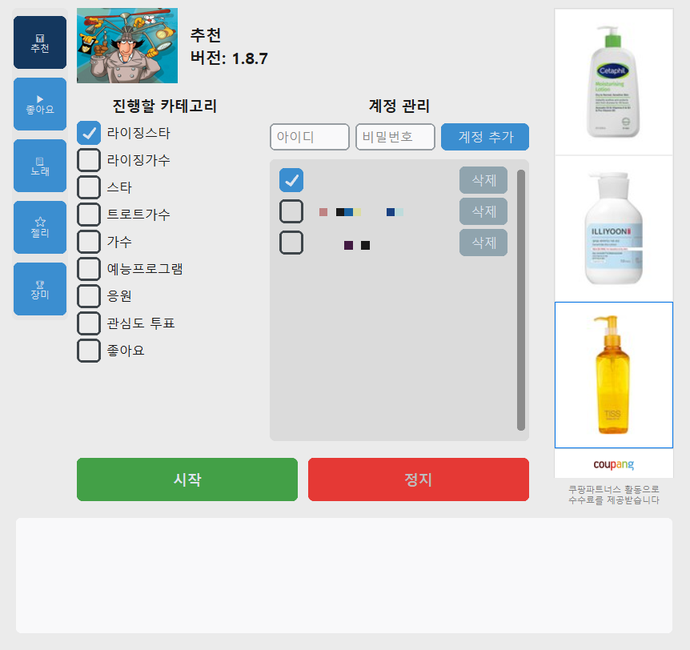

사용 설명서
3. 화면 구성 한눈에 보기
브랜드평판·유튜브·재생목록·스타플래닛·셀럽챔프·K-탑스타, 여섯 페이지 모두 아래처럼 비슷한 구조입니다.

- 왼쪽 사이드바 — 기능을 전환하는 아이콘 버튼 7개 (📊 추천 = 브랜드평판, ▶ 좋아요 = 유튜브, 📃 노래 = 재생목록, ⭐ 젤리 = 스타플래닛, 🏆 장미 = 셀럽챔프, 🎫 티켓 = K-탑스타, 🌟 스타 = 스타덤)와, 맨 아래의 📋 현황(v2.4.0부터, 아래 "현황 탭" 참고)
- 계정 관리 영역 — 자동으로 처리할 계정을 등록/체크하는 표
- 옵션/카테고리 영역 — 기능별로 어떤 항목을 처리할지 고르는 체크박스
- 시작 / 정지 버튼 — 초록색 "시작"을 누르면 동작을 시작하고, 빨간색 "정지"로 언제든 멈출 수 있습니다
- 하단 로그창 — 지금 무엇을 하고 있는지 실시간으로 한글 문장으로 보여줍니다. 문제가 생기면 이 로그를 그대로 캡처해서 문의해주시면 원인 파악이 빠릅니다
시작과 정지
"시작"을 누르면 그 탭의 기능이 돌기 시작하고, 끝나면 로그창 맨 아래에 계정별 결과 요약이 찍힙니다. 한 창에서는 한 번에 한 기능만 실행할 수 있어서, 실행 중에는 다른 탭의 "시작"을 눌러도 시작되지 않습니다. 브랜드평판과 유튜브를 동시에 돌리고 싶다면 프로그램을 두 번 실행해 창을 두 개 띄우면 됩니다.
"정지"는 지금 하던 동작을 마무리한 뒤 멈추기 때문에 누른 직후 몇 초 정도 걸릴 수 있습니다. 무인 자동 실행 중에 정지를 누르면 뒤에 예약된 기능도 함께 취소됩니다.
현황 탭
왼쪽 사이드바 맨 아래 📋 현황은 지금 돌고 있는 매크로가 어디까지 왔는지 한 화면에 모아 보여 줍니다. 휴대폰을 여러 대 돌리거나 창을 여러 개 띄우면 로그창이 뒤섞여 읽기 어려운데, 이 탭에서는 휴대폰(PC 매크로는 "PC" 카드) → 앱 → 계정 순서로 정리되어 나옵니다.
- 상태 — "진행 중", "종료", "정지함", "오류로 종료"로 표시되고, 진행 중인데 3분 넘게 소식이 없으면 "멈춘 듯"으로 바뀝니다. 오늘 돌린 것만 보이며, 다른 창에서 도는 것도 함께 보입니다
- 계정별 표 — 계정마다 상태와 완료한 횟수(동영상 광고 몇 회, 룰렛 몇 회 등)가 나옵니다. 노래(재생목록)는 이 탭에 나오지 않습니다
- 문제로 보이는 로그 — "포기", "실패", "찾지 못" 같은 말이 든 로그를 따로 모아 최근 3건을 보여 줍니다. 말 그대로 사람이 한 번 봐 달라는 표시이고, 이미 스스로 복구했거나 그날 할 일을 다 마친 뒤에 나오는 안내도 섞일 수 있습니다. 결과(완료 횟수)가 정상이면 걱정하지 않으셔도 됩니다
- 관리자에게 보내기 — 폰 카드의 버튼은 그 폰만, 위쪽 "전체를 관리자에게 보내기"는 전체를 보냅니다. 누르면 보낼 내용을 미리 보여 주고, 메모를 적어 "보내기"를 누르면 전송됩니다. 계정 아이디와 이메일은 가려서 보내며, 문제가 생겼을 때 로그를 캡처하지 않고 바로 알릴 수 있습니다
창 제목과 버전
창 제목과 각 탭 위쪽에 현재 버전이 표시됩니다. 문의할 때 이 버전 번호를 함께 알려주세요. 화면 배율을 125%나 150%로 쓰는 PC에서도 글자가 잘리지 않게 맞춰져 있습니다.